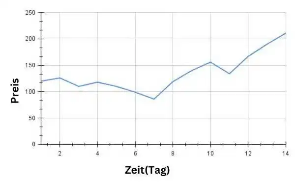

Was ist ein Candlestick-Chart?
Bevor wir uns mit den Feinheiten eines Kerzenchart (Candlestick-Chart) befassen,
ist es wichtig zu verstehen, was ein 'Diagramm' überhaupt ist.
Diagramme, oft auch mit dem Begriff Graphen gleichgesetzt, dienen dem Zweck, komplexe
und möglicherweise langweilige Daten in ein leicht verständliches, visuell
ansprechendes Format zu verwandeln. In verschiedenen Arten von Diagrammen wird Daten
durch verschiedene Symbole, wie Linien, Balken, Scheiben usw., dargestellt.
Dementsprechend werden diese Diagramme nach den Symbolen, die sie verwenden,
mit verschiedenen Namen wie Liniendiagramm, Balkendiagramm, Tortendiagramm
und so weiter kategorisiert.
Liniendiagramm
Bevor Kerzencharts (Candlestick-Charts) auf dem Aktienmarkt eingeführt wurden, waren Liniendiagramme
weit verbreitet. Diese Diagramme dienten zur grafischen Darstellung von Schwankungen im
Aktienkurs über verschiedene Zeiträume - sei es ein Monat, eine Woche, ein Tag, eine Stunde,
eine Minute oder andere Zeitspannen. Zu behaupten, dass Liniendiagramme verwendet wurden,
wäre eine Fehldarstellung; tatsächlich werden sie noch heute eingesetzt und oft in
Verbindung mit Kerzencharts genutzt. Wenn man einfach einen beliebigen Index oder
Aktiennamen in Google eingibt, werden einem sofort diese Art von Diagrammen gezeigt.
Diese Diagramme stellen den Anstieg und Fall der Preise von jeglichen Marktinstrumenten
über einen bestimmten Zeitrahmen mit der Verwendung einer Linie dar.
Dies ist relativ weniger kompliziert. Es werden auch weniger Informationen im Vergleich zu einem
Kerzenchart dargestellt. In solch einem Diagramm wird die Linie, die die Preisänderungen darstellt,
entsprechend dem Schlusskurs (Closing Price) einer beliebigen Aktie am Ende eines bestimmten
Zeitraums gezeichnet.
In unserer Kindheit haben wir alle in der Schule gelernt, mit Graphenpapier zu arbeiten.
In einem Graphenpapier repräsentiert die X-Achse die Zeit und die Y-Achse repräsentiert den Preis.
Indem wir die Schlusskurse zu bestimmten Zeiten (z.B. 1 Minute, 15 Minuten, 1 Stunde, 1 Tag usw.)
mit einem Punkt markieren und diese Punkte verbinden, wird ein Liniendiagramm erstellt.

Candlestick-Diagramm
Dieses Diagramm enthält wie die Liniendiagramme nicht nur den Schlusskurs, sondern auch drei
zusätzliche Informationen: den Eröffnungskurs (Opening Price), den Höchstkurs (Highest Price)
und den Tiefstkurs (Lowest Price). Für die visuelle Darstellung von Preisänderungen in einem
bestimmten Zeitrahmen für Aktien eines Unternehmens oder Punkte eines Index wie NIFTY 50,
gibt es keine bessere Alternative als diese Art von Diagramm.
Zeitrahmen bzw. Zeitintervall: Wie ich bereits früher erwähnt habe und erneut betone, wird in allen Arten von Aktienmarktcharts ein bestimmtes Intervall oder Zeitrahmen als Einheit betrachtet und am Ende dieser Zeit (manchmal auch am Anfang und in der Mitte) wird die Preisänderung hervorgehoben. Bei der Betrachtung eines jeden Diagramms kann dieser Zeitrahmen geändert werden, um zu sehen, wie das gleiche Element in verschiedenen Zeitrahmen unterschiedlich aussieht. In einem größeren Zeitrahmen erhält man ein allgemeines größeres Bild, während in einem kleineren Zeitrahmen mehr detaillierte Änderungen beobachtet werden können. Dieser Zeitrahmen kann von 1 Jahr bis zu 1 Monat, 1 Woche, 1 Tag, 4, 3, 2,1 Stunde, 75, 45, 30, 15, 10, 5, 3, 2 und sogar 1 Minute reichen, in Richtung der kleineren Seite. Einige Terminals bieten sogar die Möglichkeit, ein 30-Sekunden-Diagramm anzusehen!